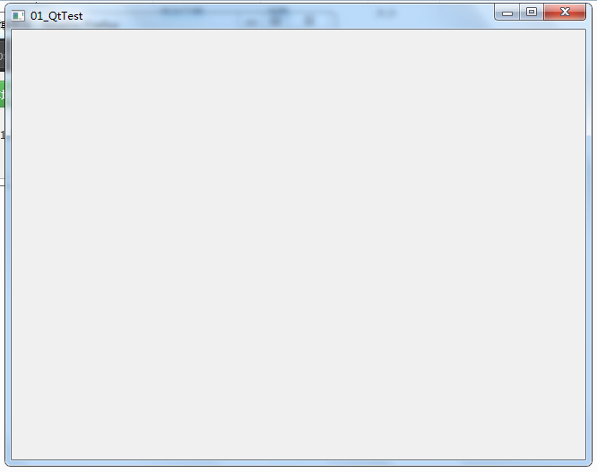

#-------------------------------------------------
#
# Project created by QtCreator 2019-04-11T17:07:35
#
#-------------------------------------------------
#添加Qt支持的模块，一个是core基础代码模块，包含运算的，gui是图形界面库
QT += core gui
#如果QT主版本大于4（也就是说当前使用的是Qt5或者更高版本），则需要添加widgets模块
greaterThan(QT_MAJOR_VERSION, 4): QT += widgets
# 应用程序的名字
TARGET = 01_QtTest
#指定Makefile的类型, app
TEMPLATE = app
#工程项目包含的源文件
SOURCES += main.cpp \
mywidget.cpp
mywidget.cpp
#工程项目包含的头文件
HEADERS += mywidget.h
/**********************************
语句1 #ifndef 标识1
语句2 #define 标识1
语句3 #endif
语句4 ……
语句5 ……
该段代码意思是：如果标识1没有被定义，则重定义标识1，即执行语句2、语句3;
如果标识1已经被定义，则直接跳过语句2、语句3，直接执行语句4、语句5、……
***********************************/
#ifndef MYWIDGET_H
#define MYWIDGET_H
#include <QWidget>
class MyWidget : public QWidget//光标停留在红色字体这里，点击F1可以查找手册
{
Q_OBJECT//信号与槽时候需要的
public:
MyWidget(QWidget *parent = 0);
/****************************
* QWidget*parent=0,父控件引用，用于向或者从父控件传递事件Signal-Slot那些。
* 这个不是继承关系，而是图形界面上各个组件之间的逻辑拓扑关系。
* 比如放在Tab里的TextBox要随着Tab大小的变化而变动自己的尺寸，事件就是通过这个传递的。
* 形参里面写着parent=0，是默认值0，C++可以通过预赋值“省略”一些形参。
* 你这里就是myWidget不是任何控件的子控件。
* 整个下来，myWidget继承QWidget，构造函数默认为0.
* 可以在构造函数初始化一切你想要的东西，说白点就是前戏！！
***************************/
~MyWidget();//对象消亡时，自动被调用，用来释放对象占用的空间
};
#endif // MYWIDGET_H
#include "mywidget.h"
//QApplication应用程序类
//Qt头文件没有.h
//头文件和类名一样
#include <QApplication>
int main(int argc, char *argv[])
{
//有且只有一个应用程序类的对象
QApplication a(argc, argv);
//MyWidget继承与QWidget，QWidget是一个窗口基类
//所以MyWidget也是窗口类
//w就是一个窗口
MyWidget w;
//窗口创建默认是隐藏，需要人为显示
w.show();
//让程序一直执行，等待用户操作
//等待事件的发生
return a.exec();
}#include "mywidget.h"
MyWidget::MyWidget(QWidget *parent)
: QWidget(parent)
{
}
MyWidget::~MyWidget()
{
}